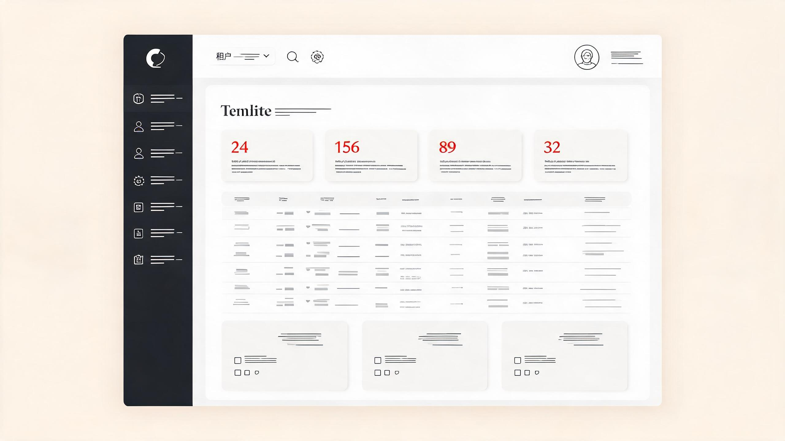
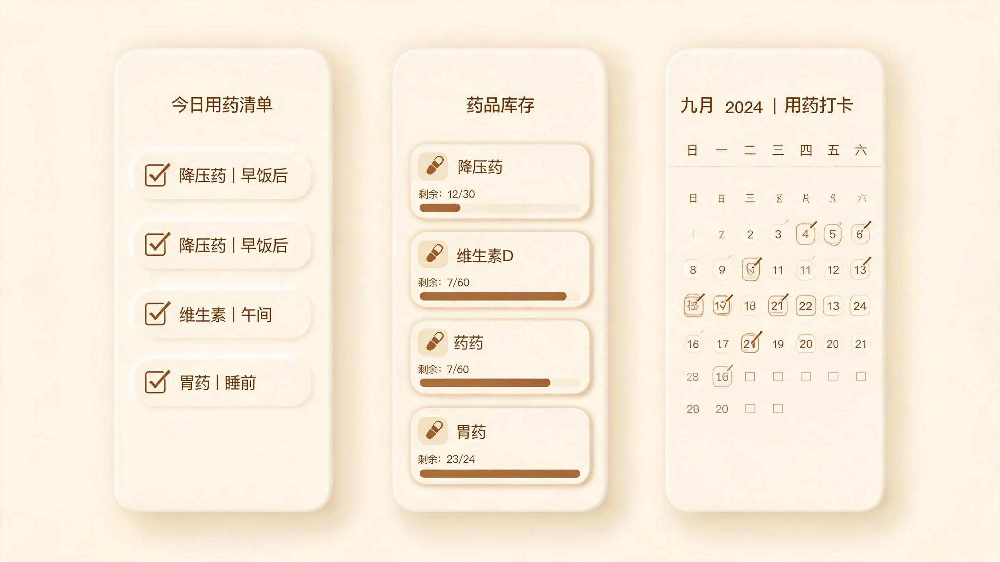

01 / 企业级平台
易维 · 企业级多租户管理平台
每个企业系统都在重复造轮子：登录鉴权、组织权限、租户隔离。 我把这些「不性感但绕不开」的部分沉淀成一套前后端一体的 SaaS 底座—— 租户上下文随线程自动透传，数据权限在 SQL 层拼接过滤条件， 再配一个代码生成器，让台账、进销存这类业务模块能以天为单位长出来。 前端 Vue3 + TS + Vite 7，后端 Spring Boot 4，本地加分布式双层缓存。
我是林远，一名全栈工程师。2016 年从计算机科学专业毕业后进入互联网行业， 先后在电商与 SaaS 领域工作，主导过支付网关重构、低代码平台搭建等核心项目。
工作之余喜欢做独立产品：写过效率小工具、开源过组件库，也维护着一个 技术博客。对工程美学有一点执念——好代码和好设计一样，都应该克制而精确。
工具与语言会更新，解决问题的能力不会。
负责低代码平台核心引擎与运行时，服务 200+ 企业客户；带领 6 人小组完成多端渲染架构升级，页面性能提升 3 倍。
主导支付网关重构，支撑大促期间每秒 2 万笔订单；搭建内部监控告警体系，线上故障平均恢复时间下降 60%。
从活动页开发起步，快速成长为项目组前端负责人；沉淀组件规范并在团队内推广。
郑州航空工业管理学院 · 计算机科学与技术 · 学士学位。
两个我从问题定义写到代码上线的作品——每个都讲清一个问题、一组取舍和一段结果。

01 / 企业级平台
每个企业系统都在重复造轮子：登录鉴权、组织权限、租户隔离。 我把这些「不性感但绕不开」的部分沉淀成一套前后端一体的 SaaS 底座—— 租户上下文随线程自动透传，数据权限在 SQL 层拼接过滤条件， 再配一个代码生成器，让台账、进销存这类业务模块能以天为单位长出来。 前端 Vue3 + TS + Vite 7，后端 Spring Boot 4，本地加分布式双层缓存。

02 / 产品 0→1
长期服药的人只有两个敌人：忘了吃、断了药。 这是一次完整的产品闭环——先用高保真原型推敲「临近服药提醒」的触发时机， 再用 uni-app 落地微信小程序：今日打卡、药箱余量预警、月历视图、 可保存分享的用药月报。后端用 Node.js 与 Spring Boot 各实现一版， 亲手验证两种选型后再做取舍。
如果你有合适的机会、合作想法，或只是想聊聊技术，欢迎随时写信给我。